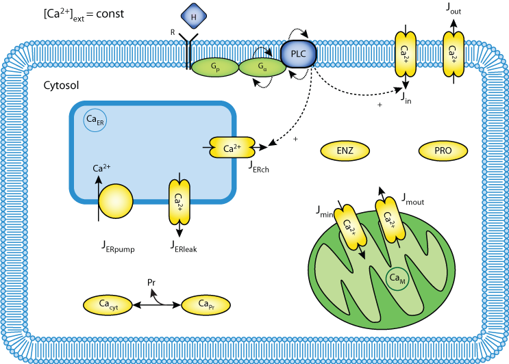

This CellML model runs in OpenCell and COR to reproduce Figures 2, 3 and 4 from the published paper. The b model does not exactly recreate published results
Many different agonists use calcium as a second messenger. Despite intensive research in intracellular calcium signalling it is an unsolved riddle how the different types of information represented by the different agonists, is encoded using the universal carrier calcium. It is also still not clear how the information encoded is decoded again into the intracellular specific information at the site of enzymes and genes. After the discovery of calcium oscillations, one likely mechanism is that information is encoded in the frequency, amplitude and waveform of the oscillations. This hypothesis has received some experimental support. However, the mechanism of decoding of oscillatory signals is still not known. Here, we study a mechanistic model of calcium oscillations, which is able to reproduce both spiking and bursting calcium oscillations. We use the model to study the decoding of calcium signals on the basis of co-operativity of calcium binding to various proteins. We show that this co-operativity offers a simple way to decode different calcium dynamics into different enzyme activities.
The original paper reference is cited below:
On the encoding and decoding of calcium signals in hepatocytes, Ann Zahle Larsen, Lars Folke Olsen, Ursula Kummer, 2004 Biophysical Chemistry, 107, 83-89. PubMed ID: 14871603
|  |
| Image depicting elements of the Larsen Olsen Kummer model |